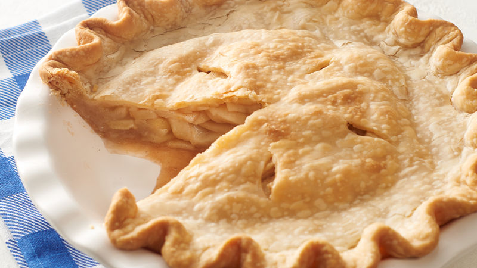

Apple Pie

Description
"Our homemade apple pie is sure to be the best apple pie recipe you've made to date. For starters, you can make this warm, cozy, classic dessert in three simple steps, and it's made with the ultimate baking shortcut: Pillsbury™ Pie Crusts. Serve up this easy apple pie and enjoy the most classic dessert with family and friends. Whether you bake it for a holiday, a potluck or as a special weekend treat, this timeless recipe is guaranteed to spark joy." - Pillsbury Kitchens
List of Ingredients
- box (14.1 oz) refrigerated Pillsbury™ Pie Crusts (2 Count), softened as directed on box
- 6 cups thinly sliced, peeled apples (6 medium)
- 3/4 cup sugar
- 2 tablespoons all-purpose flour
- 3/4 teaspoon ground cinnamon
- 1/4 teaspoon salt
- 1/8 teaspoon ground nutmeg
- 1 tablespoon lemon juice
Cooking Steps
- Heat oven to 425°F. Place 1 pie crust in ungreased 9-inch glass pie plate. Press firmly against side and bottom.
- In large bowl, gently mix filling ingredients; spoon into crust-lined pie plate. Top with second crust. Wrap excess top crust under bottom crust edge, pressing edges together to seal; flute. Cut slits or shapes in several places in top crust.
-
Bake 40 to 45 minutes or until apples are tender and crust is golden brown. Cover edge of crust with 2- to 3-inch wide strips of foil after first 15 to 20 minutes of baking to prevent excessive browning. Cool on cooling rack at least 2 hours before serving.
Link to Apple Pie Recipe!
Return to Homepage